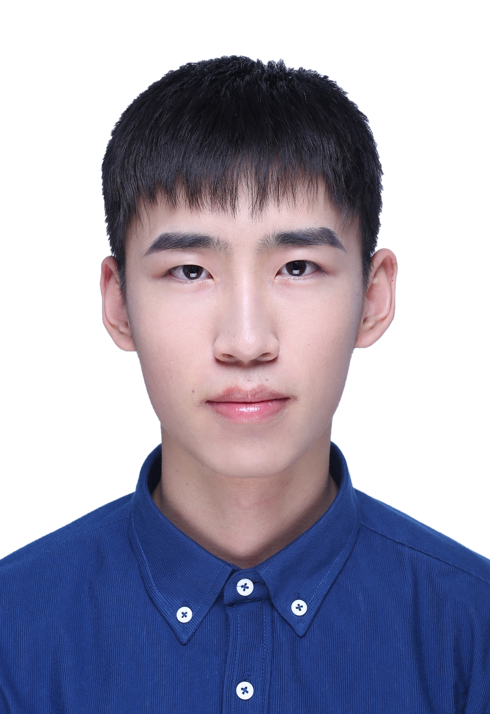

News
09 July 2022
One full paper is accepted by ECCV 2022, about Unsupervised Visual Anomaly Detection.
|  |
Zhonghang LIU 刘忠航
Ph.D. Candidate
School of Computing and Information Systems
Email: zhliu.2020 AT phdcs.smu.edu.sg
|
Zhonghang LIU is now a Ph.D. Candidate in Singapore Management University, working with Prof. Daniel Lin. His research interests include Computer Vision, Anomaly Detection, High-dimensional Data Analysis.
Education
| Singapore Management University (SMU) Ph.D. Candidate in Computer Science August 2020 - August 2024, Singapore Advisor: Prof. Daniel Lin |
| Huazhong Agricultural University Bachelor in Information and Computing Science Sep 2016 - June 2020, Wuhan, China |
Experiences
| Algorithm Intern SmartMore, August 2022 - Present Advisior: Dr. Jiangbo LU |
| Research Intern Institute of Automation, Chinese Academy of Sciences, August 2019 - January 2020 Advisior: Prof. Lei Zhen ( National Lab of Pattern Recognition) |
Publications Google Scholar
| Locally Varying Distance Transform
for Unsupervised Visual Anomaly Detection
Zhonghang Liu*, Wen-Yan Lin*, Siying Liu ECCV 2022 (Full, Accept rate: 28%) • Project • Codes |
Honors
|
Full Research Scholarship, 2020-2024
- Singapore Management University, Singapore |
|
Excellent Graduates, June 2020
- Huazhong Agricultural University, China |
Useful Links
| NUS CS Conference Rankings |
| NUS CS Journal Ranking |
| NUS CS Courses |
| Machine Learning Reading List |
| Deep Learning Reading List |
Last update: Sep 1, 2022. Webpage template borrows from Xiangnan He.